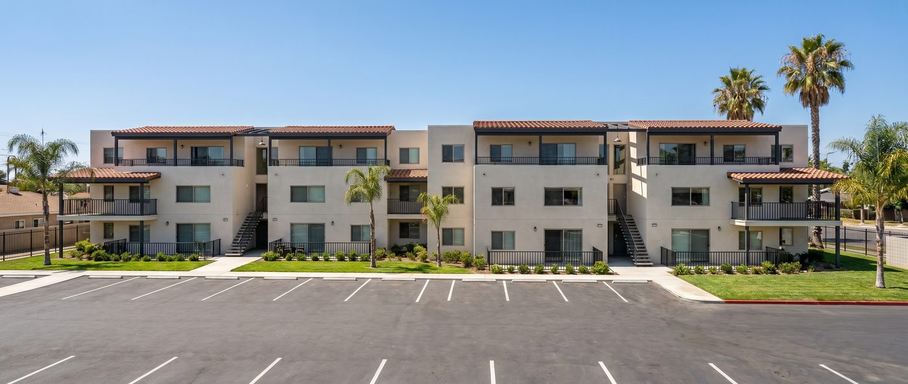
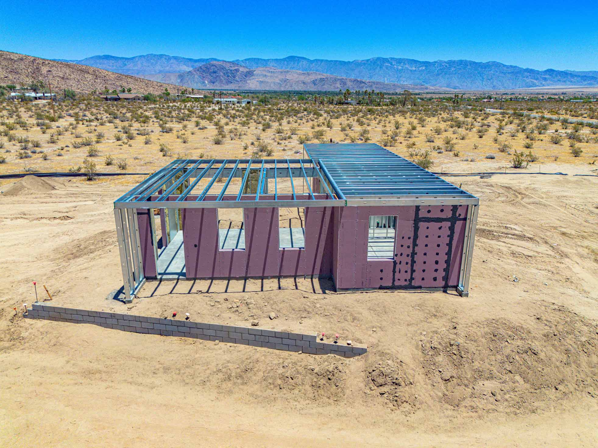

Delivered across US.
From single-family fire rebuilds to multifamily infill, here's a look at 4C panel systems already on the ground. Every project below was delivered through one of our partner architects, GCs, or developers.
Completed 4C projects
Altadena Residence
Main residence plus matching ADU, built on the 4C SAFE® system as part of our Eaton Fire rebuild program.
Altadena Residence No. 2
A Spanish Revival-style rebuild with a matching ADU, using the same 4C SAFE® panel system.
Altadena ADU
A standalone accessory dwelling unit built on the 4C SAFE® system.

Los Angeles Residence
A 2-story single-family home with office and 2-car garage, delivered on the 4C platform. See how both 4C systems compare for projects like this one.

Escondido Residence
A single-family home with office and carport, built on the steel-framed 4C SAFE® system.

Borrego Springs Residence
A single-family fire rebuild and our first-ever 4C SAFE® installation, proving the system's speed and precision in the field. Watch the assembly time-lapse below.

Rialto Apartments
Rialto, CA
A 16-unit multifamily fire rebuild built on the 4C SAFE® system.
Why every project here was built the 4C way.
Every project on this page, from single-family fire rebuilds to multifamily infill, was built the same way: designed conventionally, then manufactured as engineered panels instead of assembled stick by stick on an open site. That distinction is the whole reason 4C Construction Systems exists, and it's worth explaining in plain terms, because the method behind these projects is a bigger part of the story than any single address.
The old way: stick-framing on an open site
Traditional construction builds a structure in place, one trade at a time. Framers, sheathers, house wrap installers, and window crews each show up in sequence, exposed to weather, coordinating schedules by phone and site visits, and working to field tolerances that are only as good as the crew on the job that day. A single delayed trade, a rain week, or a framing error discovered after drywall pushes the whole schedule back. That's the old way, and it's been the default for so long that most owners, architects, and builders assume construction has to work this way. It doesn't.
The 4C way: engineered panels, factory tolerances
4C replaces that sequence with a single coordinated process: Design, Coordination, Manufacturing, Delivery, Installation, and Warranty. Instead of raw lumber and steel arriving on a truck to be cut and assembled outdoors, our panels are manufactured under factory conditions, to the exact dimensions of your permitted drawings, before they ever reach the site. Openings for windows and doors are coordinated during design and held to tolerances as tight as 1/16 inch, which is why our crews report zero field adjustments for those openings on projects like the Borrego Springs Residence, documented panel by panel in the time-lapse below. Depending on a project's fire rating and framing requirements, panels are produced on either the steel-framed, fully fire-resistant 4C SAFE® system or the wood-framed 4C ECO™ system. Both share the same manufacturing platform, the same installation sequence, and the same underlying promise: a wall panel that arrives ready to stand, not ready to build.
Faster dry-in, less schedule risk
That precision is also why these projects went up faster than a comparable stick-built structure. Because the panels are pre-cut, pre-labeled, and sequenced for assembly before delivery, crews aren't waiting on weather, measuring twice on site, or reworking a bad cut. Installation happens without heavy equipment, and the whole 4C system is engineered to cut onsite construction time by up to 30% compared to stick-framing. For a fire rebuild, where every week matters to a family waiting to move home, or a multifamily project on a financing clock, that schedule certainty is often worth more than the material savings.
Less waste, lighter carbon footprint
The gap between the two methods shows up in the numbers, too. Traditional site-built construction generates significant material waste, since offcuts, weather-damaged materials, and field errors are priced into nearly every job. A factory environment cuts panels to spec with far less scrap, and because our systems minimize embodied and operational carbon through efficient material use, projects built on 4C carry a measurably lighter footprint than the equivalent site-built structure. If the sustainability case is what brought you here, it's worth reading in more depth, since the carbon and cost math compound across a project's full lifecycle, not just during construction.
Built to fit your process, not replace it
None of this requires anyone to change how they already work. Architects design the way they always have and hand us the same drawings they'd hand any GC. Builders keep their existing scope and sequencing, just with a manufactured panel replacing weeks of framing labor. Owners and developers still finance, permit, and inspect the project through entirely conventional channels; nothing about the process is proprietary or unfamiliar to a building department. That's deliberate. The system is designed to slot into a project that's already underway, whether it's an early concept sketch or a fully permitted set, not to force a redesign around our manufacturing.
That's why the projects above look so different from one another: a two-story Los Angeles residence with an office and 2-car garage, a Spanish Revival fire rebuild in Altadena, a single-family home with an office and carport in Escondido on 4C SAFE®. Different architects, different builders, different fire-risk profiles and unit mixes, all delivered on the same underlying platform. The building itself stays entirely conventional. What changes is where the labor happens, and how much certainty you get once it does.
If you're evaluating whether this approach fits your next project, the fastest way to see it in action is the assembly time-lapse below, which shows a full sequence from panel layout to standing frame in the field. From there, our systems overview breaks down the manufacturing and delivery process step by step, and our locations page shows where else in California these projects are already underway. And if you're ready to talk specifics, whether you're an owner, an architect, or a builder, reach out and we'll help you figure out which system fits your site.
Watch our first 4C SAFE® installation come together.
The Borrego Springs Residence was a single-family fire rebuild and 4C SAFE®'s proving ground: panels manufactured in Hayward, delivered to a remote desert site, and assembled without heavy equipment. Here's the process, from panel layout to standing frame.



Have a project in mind?
Tell us about your site and timeline, and we'll help you choose the right system.